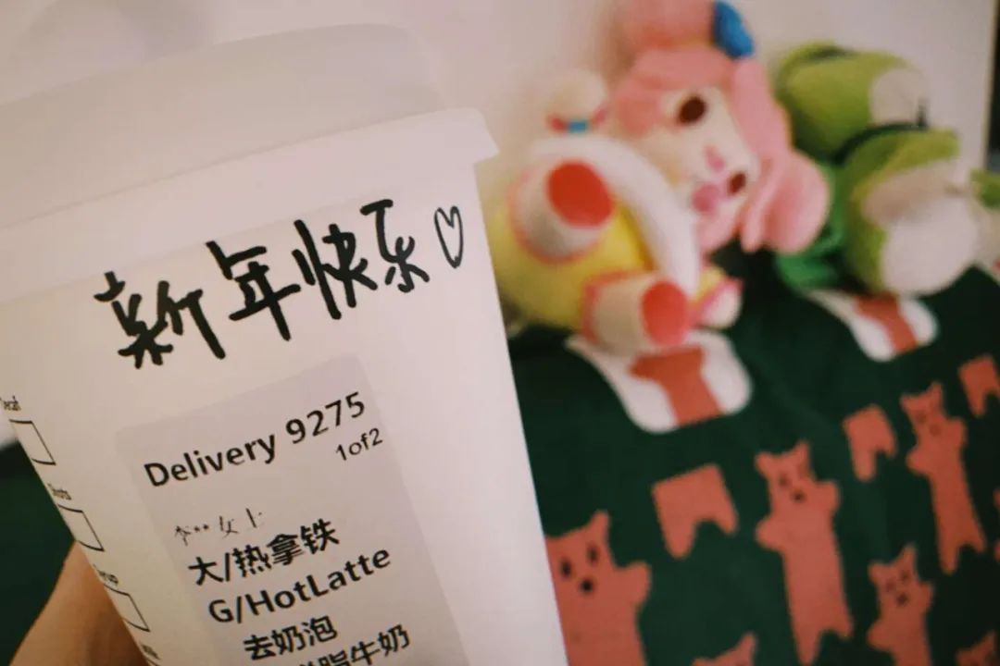

不能奔赴抗疫一线，普通人可以做什么?
原文链接 备份链接 - 疫 情 之 下 - 只有在这样的特殊时刻，我们才体会到平平常常的日子是多么美好，多么幸福…… ” 疫情爆发得如此迅猛，让所有人始料未及。 己亥年腊月二十九，公历2020年1月23日，我去单位上年前最后一天班，那时我 …

你印象中的武汉是什么样的？
这座位于华中地区的省会城市充满着生命力，夏天够热，热干面是他们最常见的美食，闲下来的老人们会聚在街头巷尾打牌，春节是他们最热闹的节日，有归乡的年轻人，有早早就置办年货的老人，有火红的对联和热情的拜年。
2020 年春天，武汉人的春节是灰色的。新冠病毒的肆虐把他们原本的闲逸生活摔在地上打了个粉碎。我们努力地找到了几个武汉人，他们跟我们讲述了他们从疫情开始至今的生活变化。他们是幸运儿，毕竟身处这座城市之中，「生死之外，皆是小事」。
接受我们采访的三个人截至目前都没有成为这次新冠病毒的携带者，他们幸运地以各种各样的方式逃过了这一劫。他们当中有孕晚期的准妈妈，有不得不被隔离在工作城市一个人过节的武汉女孩，有回到老家便不得不隔离的北漂男孩。他们见证了这一个月的城市变化，我们记录下他们的故事，也带大家看看一个武汉普通人在这个一波三折的春节里的不平凡生活。三个人都与我们说过同样的话：「2020 年的春节，我可能一辈子都忘不掉。」

被封城外的武汉人
小李
女
武汉人、未感染
29 岁
深圳互联网公司员工
深圳工作 3 个月，个人收入不详
大年初七，武汉女孩小李就开始在她深圳的家里办工了。当大多数公司都在为这场瘟疫导致的停工叫苦不迭时，她所在的这家位于深圳，主打网络游戏的公司却迎来了最大的红利期：宅在家里的人太多，大多数人会选择靠网络游戏打发时光。「只是因为北京上海深圳等大城市的人员流动性太大，我们去公司办公的时间还没法确定。」
从计划的初七上班延长到 2 月 3 日上班，再变到 2 月 10 日上班，再到现在的「去公司办公的时间待定」，小李不得不在深圳的家里简单搭了一个办公位完成日常工作，可她却总是魂不守舍。

因为买不到口罩，如今小李只能把本应几小时一换的防护口罩在用后晒起来消毒，准备第二次使用。可这样的事她不敢告诉自己远在武汉的父母
在深圳街头，你随处都可以看到「来了就是深圳人」的横幅标语，这个年轻的城市人头攒动，热情洋溢，随时欢迎外来的人们来建设它。武汉女孩小李才来这座城市 3 个月，租住在一间不大的房子里。90 后的她与男朋友同是武汉人，还没结婚，养了 2 只猫。这座城市生活节奏快，工作机会多，两个年轻人又都不怕苦累加班，所以月薪都不错，跟大多数情侣一样，过着自给自足的小日子。
小李原本算是最早嗅到一丝丝不寻常气息的人之一。12 月末，格外关注家乡信息的她在网上看到了一则关于华南海鲜市场发现不明肺炎患者的消息，她读完了全篇内容，并把这则报道转发给了在武汉的父母。
她转发的消息并没有引起家人的重视，因为从元旦开始一直到一月中下旬的时间，关于「武汉肺炎」的消息就突然人间蒸发一般不见了踪影，没有人再提起这件事。「也许是假的吧……」当时的她心怀侥幸。为了回家过年，男朋友在 1 月 17 日一早就乘飞机回了武汉，小李则因为公司还有工作没有完成，要多在深圳留几天。

就在男朋友回老家的当天，小李在新闻中看到日本出现了一个肺炎感染病例，患者是从武汉返回日本的。仅仅一天之后，她在朋友圈刷到自己在武汉某医院工作的朋友穿着全套防护服诊疗的图片。再隔一天，微博上开始出现了不少定位为武汉的求救信息。她连给父母发了几条消息，提醒他们出门务必戴口罩，做好防护。
小李问她已在家乡的男朋友武汉现在的情况怎么样，男朋友沉吟半晌，说：「今年我们怕是不能去归元寺数罗汉了。」
去归元寺数罗汉是传统武汉人的风俗习惯，这样的传统延续了一代又一代，年轻人至今也愿意在每年春节去热热闹闹的归元寺数罗汉，看自己未来一年的运势，图个大吉大利。「每年过年的归元寺总是人山人海，我不能想象一个不去数罗汉的春节，也很难想象归元寺冷冷清清的样子。」小李这样说：「当时我并不知道这件事情会如何发展，这是我们第一次遇到这种疾病，大多数人也都不知道这种肺炎究竟会严重到什么程度。当时我还觉得男朋友说得夸张，我说等我回去，咱俩戴上口罩去归元寺就没事了。」
那几天的口罩价格也让小李感到有些异样：「20 日，看到官方通报武汉发现了 17 例患者之后，我马上下单了一些医用口罩，准备回家的时候带回去。21 日，官方通报一例患者死亡，我看到消息的时候是上午 10 点，我立马在京东买了两盒 N95 口罩，一盒填了武汉老家的地址，一盒寄到我现在住的深圳这里。」小李下单的时候，3M 口罩的价格是 135 元 50 枚，中午 12 点，同样数量的一盒口罩已经卖到了 180 多块。一小时后再点击货品，上面只显示三个字：已售空。

父母给小李发来的武汉家里口罩存货
也是那天，爸爸在电话里跟她说：「要是害怕你今年就别回来了。」从没在异乡过过春节的她还没法狠心做这个决定。她继续在网上下单，抢到了一批护目镜寄给老家，「武汉的情况比深圳严重嘛，老人抵抗力又弱，肯定需要更多防护。」这批护目镜直到今天也没能发货，就这样直挺挺地躺在小李的手机订单里，但她不敢取消。
「21 日我下班有点晚，回家路上刷微博看到有很多呼吁武汉人今年春节不要回老家的声音，包括官方渠道。我就决定不给大家添麻烦，不回家了，我以为爸妈会不开心，劝我回去，我还特地问我爸要不要先跟奶奶说一声，怕她埋怨我。我爸当时的语气特别斩钉截铁，说不用说，你赶紧退票，别回家了。我从未感觉自己是个如此恋家的人，还觉得自己很叛逆，总嫌弃父母唠叨，可我爸说你别回来了的时候，我眼泪一下子就下来了。」
23 日凌晨，官方宣布灾情最严重的武汉封城，她真的回不去了。
2020 年 1 月 24 日，除夕夜，武汉女孩小李在她深圳的出租屋里，独自一人迎来了人生中第一个哭着过的春节。

除夕那天，小李一个人在深圳过，她点的星巴克咖啡上被店员写了：新年快乐
「那几天我每天都哭，跟家里通电话哭，不通电话也哭。但我不敢让家里人看到，可眼泪就是止不住。」流泪是因为无法在灾难来临时陪伴父母的愧疚，是因为没有痛下决心早点回家的自责，是因为现在天各一方的无力，是为仍在上涨的患者数字感到崩溃，也是因为对于未来发展态势不确定的畏惧。
其实小李本来有机会让父母来深圳的。「20 日前后，我觉得态势不对，就跟我爸妈说，不然我给你们买机票，你们来深圳吧。可我爸说，奶奶自己在家没人照顾可不行。这倒确实是个问题，就算我当时接来了爸爸妈妈，奶奶那么大年纪了肯定只能留在家里，现在疫情这么严重，她一个人肯定不行的，我们在深圳反而会更担心她。」

今年陪小李过春节的，是一堆玩偶和两只猫
如今这个家庭又面临新的挑战。小李的父母都是公务员，单位提倡公务员必须在第一时间复工，冲在一线。她在深圳远程揪心的事情就更多了：「武汉已经买不到防护服了，之后下单的酒精和消毒液根本不见发货，家里的口罩也在不停地消耗。城市里还是每天都有人倒下，我不知道能怎么保护他们，家人中如果有一个人染病，我可能真的会疯掉。」
小李用「市井」和「坚韧」形容传统的武汉人：「比如他们自发组织的推开窗子各自喊出『武汉加油』这样的口号，这是他们当时唯一能做的。别看我是武汉人，但我不在武汉，我也没有他们此时此刻的感同身受。经历这么大的灾难，他们一定需要一个渠道来舒缓自己的内心，喊出来可能会帮助他们发泄心中的压抑、恐惧和悲观。」
如今身在异乡的她只能随时用微信跟父母联系，多数时候是视频电话，叮嘱他们测体温，开窗通风，出门做好一切防护。「这时候父母反而在宽慰我，告诉我一切都挺好，怕我担心。我就觉得特别对不起他们，这时候我应该站在他们面前，保护他们来着。」

跟她频繁地落泪不同，父母在视频里倒是常对她笑，给她看当天晚上做的晚餐，让女儿放心，家里一切正常。「只要武汉一解禁，我无论如何都会第一时间飞回去看他们，跟他们在一起。」说到这里，她又哭了。
今年是小李 29 岁的人生中第一次在异乡过年，为了保持一点过年的仪式感，她特地买了一副对联贴在大门上。跟往年的「新年大吉」和「恭喜发财」不同，今年她选的对联上写着：阖家欢乐。

C O N T R I B U T O R S
（图片均为受访者个人提供）
撰文：Apollo
编辑：暖小团
责编：Neil
执行：布一

韩国已经这样拍竞技类题材了？
豆瓣9.4《棒球大联盟》，你一定要看

武汉幸运儿 | 他对窗外喊出了「武汉加油」
北漂男孩 Max 是距离新冠病毒「最近」的一个，但也是最「安全」的一个。可让他忧心的，不止有抗疫一件事这么简单。
__________________


**给我好看！ **
**
原文链接 备份链接 - 疫 情 之 下 - 只有在这样的特殊时刻，我们才体会到平平常常的日子是多么美好，多么幸福…… ” 疫情爆发得如此迅猛，让所有人始料未及。 己亥年腊月二十九，公历2020年1月23日，我去单位上年前最后一天班，那时我 …
原文链接 备份链接 河北医科大学第二医院麻醉科ICU护士 朱君宇 澎湃新闻记者 吕新文 2月21日，第八批河北省援鄂医疗队 175人又踏上了征程，至此，河北省共派出了1036名医护人员驰援湖北。 新冠肺炎的爆发，让我们度过了一个百感交集 …
原文链接 备份链接 “ - 疫 情 之 下 - 外面没有好消息，我们市里有两例确诊了，他们都是从武汉回来！我不敢把任何不好的消息告诉爸爸，怕他心理负担重。 ” 1 2020年1月18日，公司年会，这一天大家跟往年一样——总结，去食堂吃午 …
原文链接 备份链接 你印象中的武汉是什么样的？ 这座位于华中地区的省会城市充满着生命力，夏天够热，热干面是他们最常见的美食，闲下来的老人们会聚在街头巷尾打牌，春节是他们最热闹的节日，有归乡的年轻人，有早早就置办年货的老人，有火红的对联和热 …
原文链接 备份链接 武汉水系多，长江汉水交汇，划分出武汉三镇。江水浩荡，码头就多，拼码头靠什么？靠“斗狠”。武汉的汉正街在江边，过去全国各地的小商贩来打货，江边有很多做苦力的“扁担”，与重庆棒棒一样，帮小老板们用扁担挑子来运货，靠苦力 …